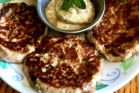

Charleston Salmon Patty Recipe

Description
A classic hometown recipe!
Ingredients
- 6 ounces skinless, boneless salmon
- 1/8 cup mayonnaise
- 1/8 cup dry bread crumbs
- 1/8 cup chopped green onion
- 1 egg white
- 2 teaspoons lemon juice
- 1/2 teaspoon Cajun seasoning
- teaspoon butter or margarine
- 1 tablespoon mayonnaise
- 1/2 teaspoon Dijon mustard
Steps
- Combine salmon, 1/8 cup mayonnaise, bread crumbs,
green onion, egg white, lemon juice, and Cajun
seasoing in a bowl. Mix well and shape mixture
into 1/2-inch thick patties.
- Heat butter in a nonstick skillet over medium
heat. Adda patties and cook until golden brown, 3 to 4
minutes per side.
- Combine 1 tablespoon mayonnaise and Dijon
mustard together in a bowl. Serve sauce
with croquettes.